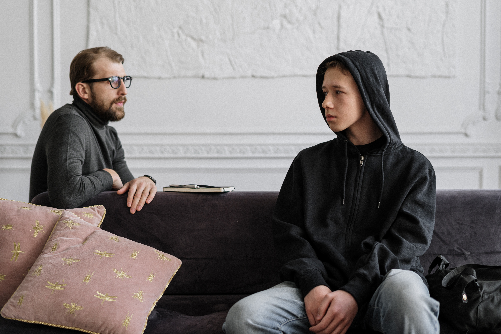

مراحل التطور | مايو 2021
مراحل تطورالتلعثم.
-
المرحلة الأولى:
ويحدث بها نسبة شفااء تلقائية كبيرة جداً ، وفي هذة المرحلة لا يدرك الطفل لجلجته ، ويمتاز التلعثم في هذه المرحلة بتكرار المقاطع والحروف، ويظهر الطفل في هذه المرحلة ردود فعل قليلة لعدم الطلاقة في الكلام، فتظهر اللجلجة عندما يكون الطفل واقع تحت ضغط الكلام و تتميز هذه المرحلة بما يلي- تميل الصعوبة فيها لتكون عارضة، وغير ثابتة، وقد تظهر في فترة زمنية متفاوتة أسابيع مثلا وشهور وأحيانًا أوقات طويلة من الكلام السلس.
- يزداد التلعثم إذا تعرض الطفل لضغوط سواء كلامية أو انفعالية.
- التكرار هو المسيطر على هذه المرحلة،ويكون في المقاطع الأولى من الكلمة.
- يميل التلعثم ألى أن يكون في بداية الجمل أما بالنسبة للأطفال الصغار جدًا، فيكون في الكلمة الأولى من الجملة.
-
المرحلة الثانية من سن ٦ حتي ٨ سنوات:-
في هذه المرحلة اللجلجة تصبح مزمنة أكثر مع فترات ضئيلة من التحسن ، والطفل يفكر بنفسه كشخص متلعثم ويظهر التلعثم في جزء كبير من كلامه، وبسبب ظهوره في سنوات المدرسة الابتدائية يكون الاضطراب فيها مزمنًا، ويصبح هؤلاء الأطفال على وعي بصعوباتهم الكلامية ويعتبرون أنفسهم متلعثمين، ويكثر التلعثم في الأجزاء الرئيسة للكلام كالأسماء، والأفعال، والصفات، والظروف بصورة يمكن أن تكون زمنية، وتظهر عدم القدرة على النطق بوضوح خاصة صعوبة نطق الكلمة الأولى مع وجود جهد واضح . -
المرحلة الثالثة :- من سن ٨ حتي ١٠ سنوات :-
من سن الثامنة إلي سن البلوغ ، و تكون في الأغلب لدى الأطفال في سن العاشرة حتى بداية مرحلة المراهقة (الطفولة المتأخرة)ويصبح التلعثم فيها إلى حد كبير , و التلعثم في هذه المرحلة يظهر ويختفي حسب لمواقف محددة مثل التحدث في التليفون ، او مع الغرباء ، أو أثناء القراءة في الفصل ، ويأخذ الشخص المتلعثم بعين الاعتبار الحروف والكلمات الصعبة أكثر من غيرها، ويستبدلها بحروف وبكلمات أسهل، كما يستخدم المتلعثم في هذه المرحلة الكلمات البديلة أو استحضار معنى آخر للكلمة والدوران على المعنى، كما يظهر علية علامات تشير إلى الارتباك، وهو في هذه المرحلة يظهر توقعًا للتلعثم. ويكون الطفل مدركاً للجلجته ولا يتفادي لجلجته أثناء الكلام -
المرحلة الرابعة :- من نهاية مرحلة الطفولة المتاخرة الي بداية المراهقة.
وتظهر نموذجيًا في مرحلة المراهقة المتأخرة والرشد، حيث يكون التلعثم راسخاَ ومتأصلاَ في الفرد ويظهر نتيجة القلق والتوتر الذي يصاحب مواقف، فالشخص المتلعثم في هذه المرحلة يخاف من توقع التلعثم، ويبدي خوفًا من الحروف والكلمات والمواقف الكلامية، ويشعر بالخوف والارتباك وبالحاجة إلى المساعدة. ويكون المتلجلج واعياً بلجلجته ويتفادي مواقف الكلام.
- التصنيف
- الاسباب 1
- التعريف 1
- السمات و المظاهر 1
- التشخيص 1
- العلاج 1
- مراحل التطور 1
- مقالات اخري قد تعجبك
-

كيفية تشخيص التلعثم ؟
-

ما هي اسباب التلعثم ؟
-

سمات التلعثم و مظاهره